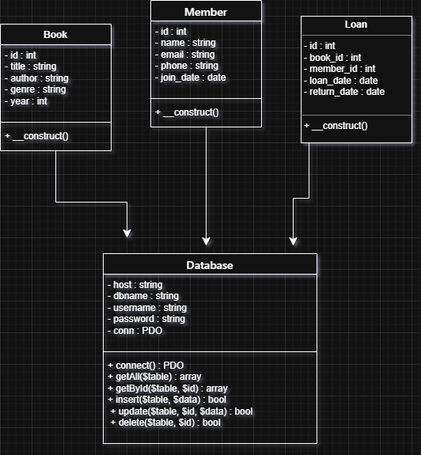
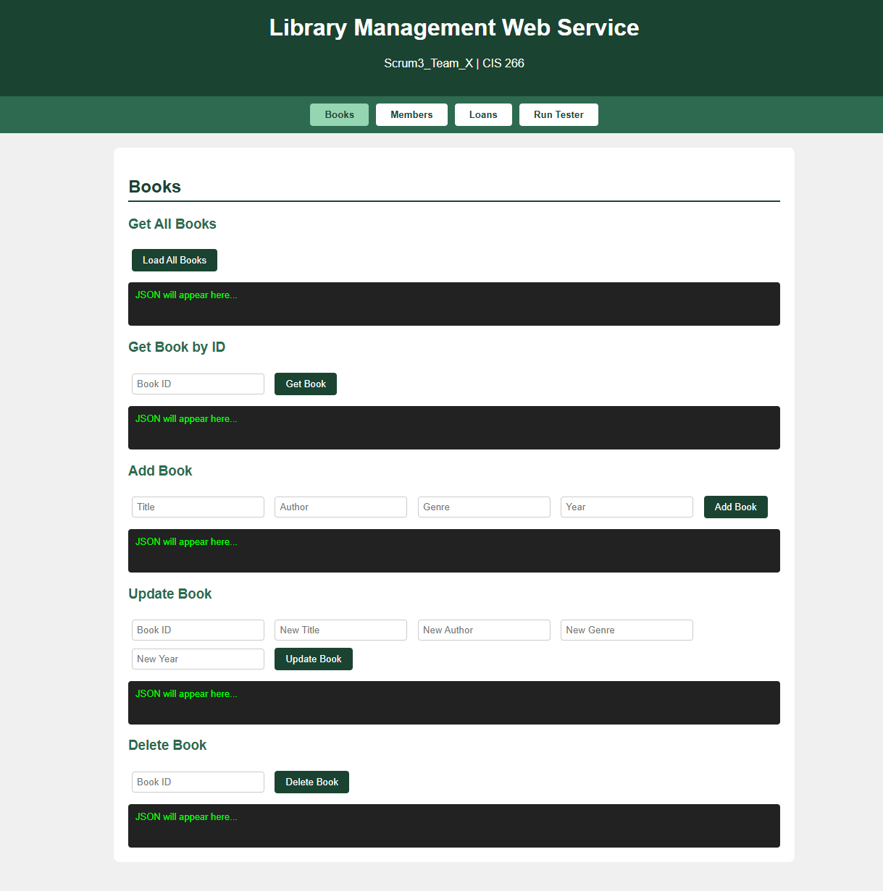
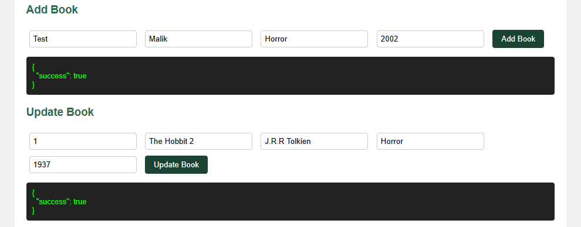
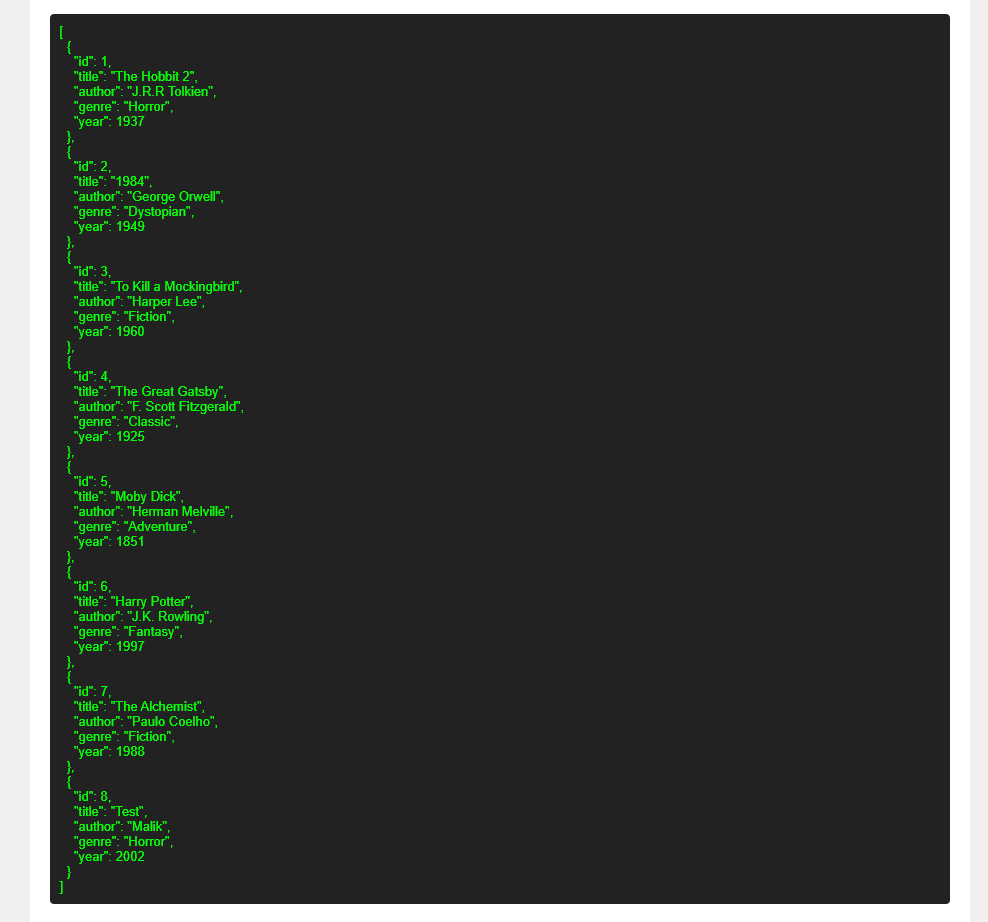
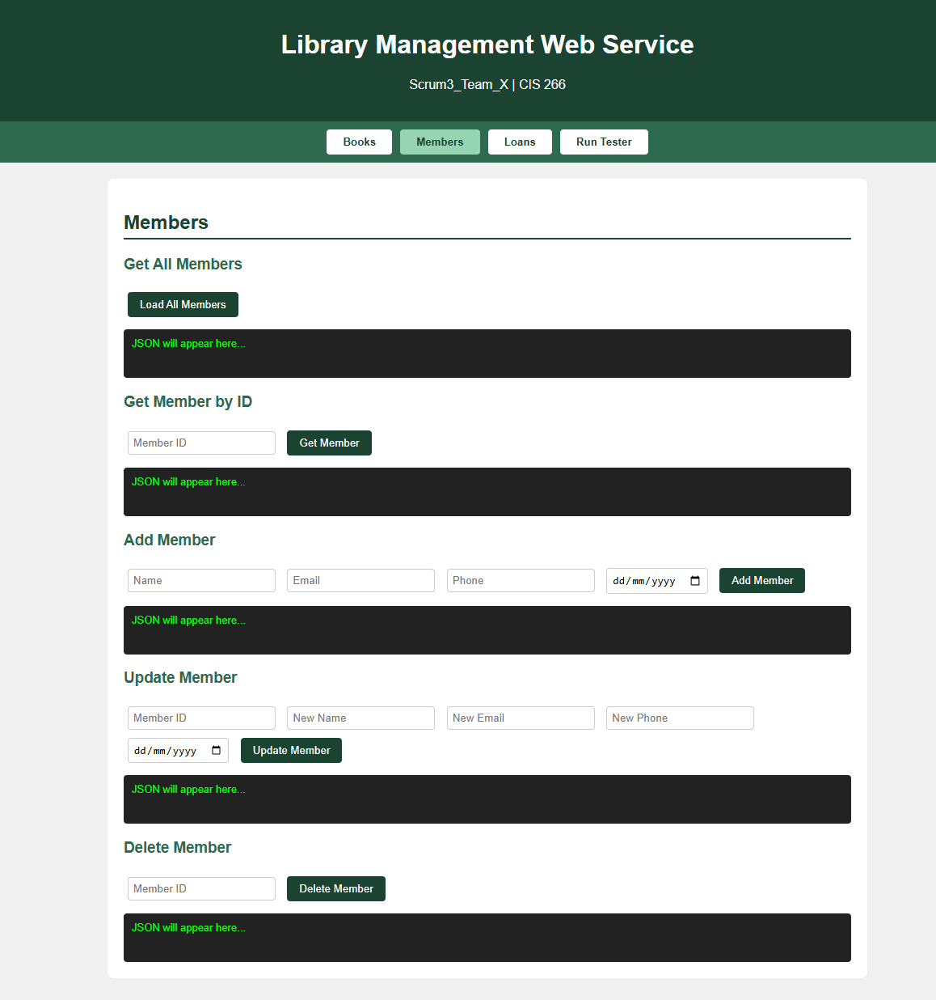
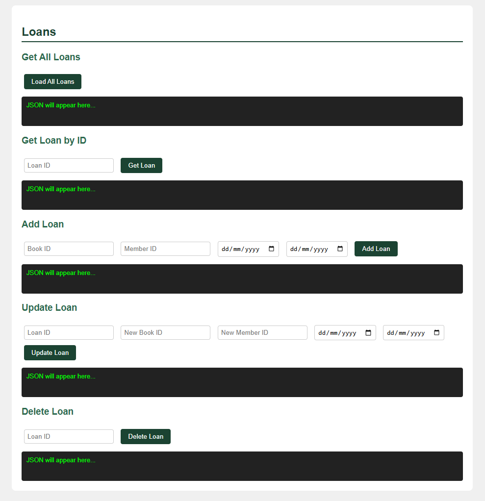
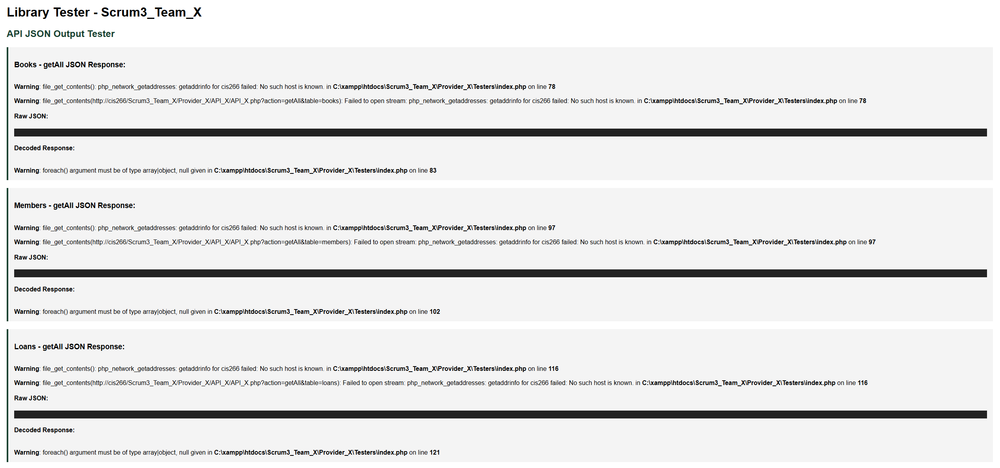

About the Project
The Library Management Web Service is a full-stack team project built for CIS 266. The system allows users to manage a library's Books, Members, and Loans through a RESTful API that communicates using AJAX and JSON. The project is structured into two main components: a Provider (the backend web service) and a Client (the frontend interface).
The backend uses OOP PHP with a generic Database class that handles all CRUD operations
across all three tables dynamically. The frontend client provides a clean, tabbed interface where
users can get, add, update, and delete records — with all responses displayed as formatted JSON in
real time.
Technologies Used
Key Features
- 3 database tables — Books, Members, and Loans — each with 7+ records
- Full CRUD operations (Create, Read, Update, Delete) for all three tables via RESTful API
- Generic Database class using PDO that handles all tables dynamically — no duplicate code
- AJAX-powered client that displays all API responses as formatted JSON in real time
- Tabbed frontend interface separating Books, Members, Loans, and the Tester
- PHP Tester page showing raw and decoded JSON API responses for all tables
- UML class diagrams for all PHP classes
UML Diagram

UML Class Diagram — Book, Member, Loan, and Database classes
Screenshots

Books — full CRUD interface

Add and Update book — JSON success response

Get All Books — formatted JSON output

Members — full CRUD interface

Loans — full CRUD interface

PHP Tester — API JSON output tester
Sample Code
Generic Database class handling all CRUD operations dynamically across all tables:
// Database.php — Generic PDO Database Class
class Database {
private $host = "localhost";
private $dbname = "library_db";
private $username = "root";
private $password = "";
public $conn;
public function connect() {
$this->conn = new PDO(
"mysql:host={$this->host};dbname={$this->dbname}",
$this->username, $this->password
);
$this->conn->setAttribute(PDO::ATTR_ERRMODE, PDO::ERRMODE_EXCEPTION);
}
public function getAll($table) {
$stmt = $this->conn->prepare("SELECT * FROM $table");
$stmt->execute();
return $stmt->fetchAll(PDO::FETCH_ASSOC);
}
public function insert($table, $data) {
$columns = implode(", ", array_keys($data));
$placeholders = ":" . implode(", :", array_keys($data));
$stmt = $this->conn->prepare(
"INSERT INTO $table ($columns) VALUES ($placeholders)"
);
foreach ($data as $key => $value) {
$stmt->bindValue(":$key", $value);
}
return $stmt->execute();
}
public function update($table, $id, $data) {
$fields = implode(", ", array_map(fn($k) => "$k = :$k", array_keys($data)));
$stmt = $this->conn->prepare(
"UPDATE $table SET $fields WHERE id = :id"
);
foreach ($data as $key => $value) {
$stmt->bindValue(":$key", $value);
}
$stmt->bindValue(":id", $id);
return $stmt->execute();
}
public function delete($table, $id) {
$stmt = $this->conn->prepare("DELETE FROM $table WHERE id = :id");
$stmt->bindParam(":id", $id);
return $stmt->execute();
}
}